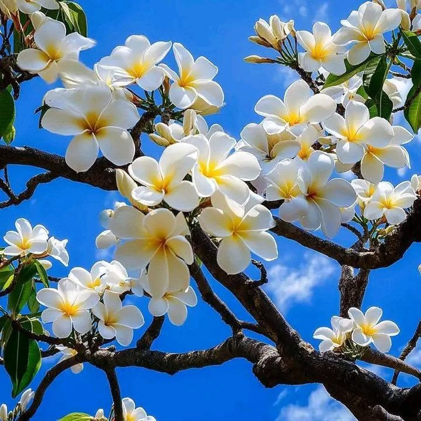
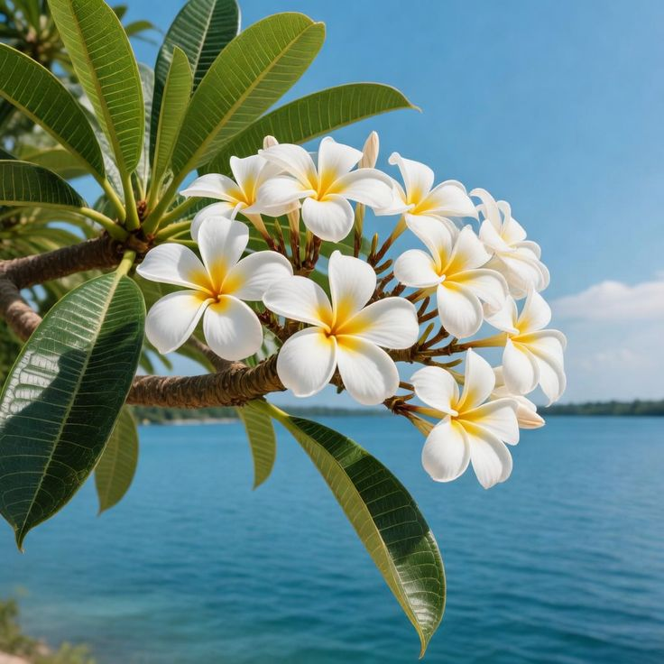
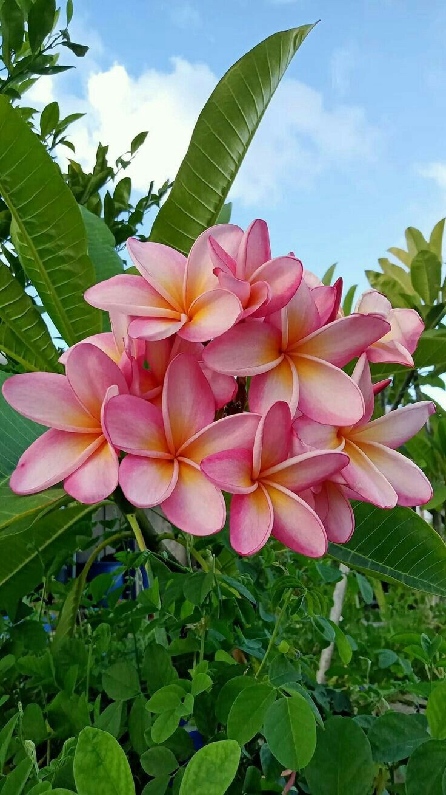
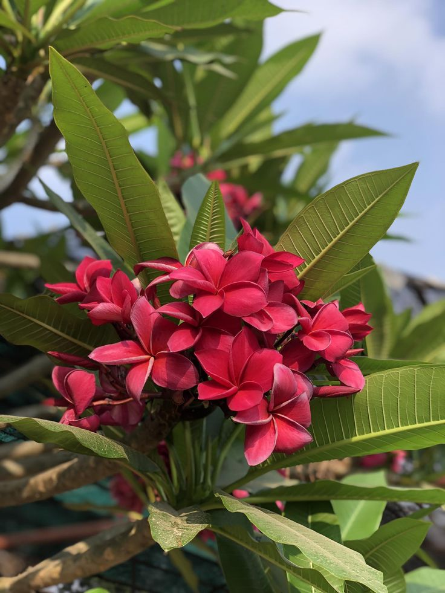
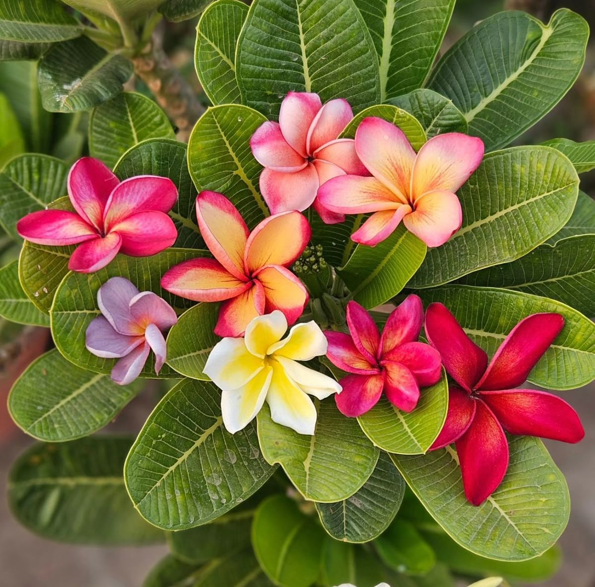
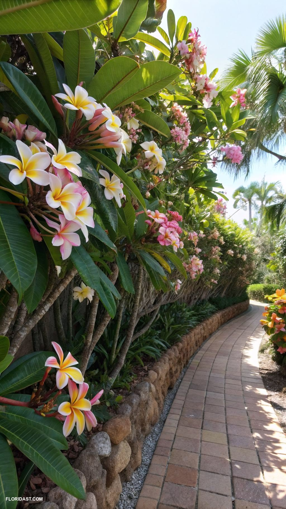

Plumeria
Plumeria
Plumeria is a tropical flower known for its fragrant blooms, delicate petals, and beautiful colors. It is also commonly called Frangipani.

Plumeria
Plumeria is a tropical flower known for its fragrant blooms, delicate petals, and beautiful colors. It is also commonly called Frangipani.

Plumeria is a genus of flowering plants in the Apocynaceae family. These plants are native to tropical regions of the Americas and are now widely grown in warm climates around the world.
Plumeria flowers are often white, yellow, pink, or red. Their petals usually overlap, creating a distinctive five-petal shape.
Plumeria plants usually grow as small trees or shrubs. Their fragrant flowers are popular in tropical gardens and traditional decorations.
Plumeria comes in different species and cultivated varieties, with a wide range of flower colors.

White petals with a yellow center and a sweet fragrance.

Pink petals that may have white or yellow coloring near the center.

Varieties with reddish or deep pink petals and distinctive colors.

White, yellow, pink, red, and combinations of these colors.
Many varieties have a sweet fragrance, which can be stronger at certain times of day.
Plumeria is a perennial plant and can live for many years in suitable conditions.
Individual flowers usually last several days, while a flowering plant may produce blooms over an extended period.
Full sunlight encourages healthy growth and flowering.
Well-drained soil is essential to prevent root rot.
Water during active growth, allowing the soil to dry somewhat between watering.
Prefers warm, tropical conditions and is sensitive to cold.
Commonly propagated through stem cuttings and sometimes seeds.

Plumeria is relatively easy to grow in warm climates when its basic needs are met.
Water regularly during active growth, but avoid waterlogged soil. Reduce watering when the plant is dormant.
Remove dead or damaged branches. Prune when necessary to maintain the plant's shape.
Use a suitable fertilizer during the growing season and follow its instructions.
Check for spider mites, mealybugs, and other pests. Remove affected parts when appropriate.
Explore more flowers with beautiful blooms and distinctive fragrances.